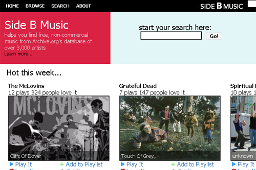
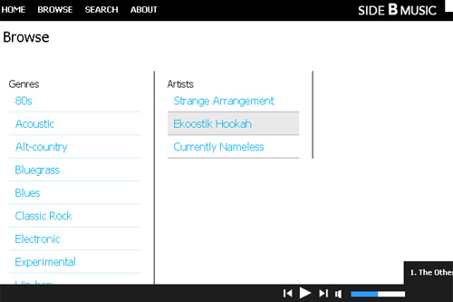

Fall 2009
Archive.org has a collection of thousands of free, non-commercial songs from over 3,000 artists. But getting access to these songs is tough - and that's where Side B comes in.
Side B Music uses the Last.FM API to pull artist pictures and genres and ranks popular songs based on user feedback. It also allows you to stream and download music.